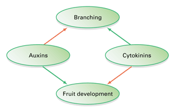
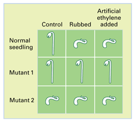
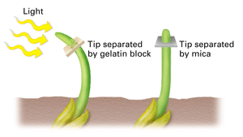

Reviewing Concepts
Multiple Choice
Choose the letter of the best answer.
1. Plant hormones act by affecting the activities of
a. genes.
b. membranes.
c. enzymes.
d. all of the above.
2. Auxins do all of the following except
a. promote cell elongation.
b. promote fruit development.
c. promote "leaf drop."
d. inhibit plant branching.
3. During winter, which plant hormone inhibits new growth?
a. ethylene
b. gibberellin
c. cytokinin
d. abscisic acid
4. Leaf drop is caused by
a. an increase in day length.
b. an increase in gibberellins.
c. a change in the color of the leaves.
d. a shift in the balance of ethylene and auxins.
5. A growth response to touch is an example of a
a. phototropism.
b. sleep movement.
c. circadian rhythm.
d. thigmotropism.
6. A species that blooms when night length exceeds a critical length is a
a. day-neutral plant.
b. short-day plant.
c. long-day plant.
d. short-night plant.
7. Phytochrome is
a. a hormone that stimulates plant flowering.
b. a protein that helps control the timing of flowering.
c. a protein that responds to waterlogged soil by killing root cells.
d. a hormone that inhibits plant flowering.
Short Answer
8. Summarize the Darwins' experimental set-up when they tested plant responses to light.
9. Compare and contrast the effects of auxins and cytokinins.
10. Explain how rapid plant movements are controlled at a cellular level.
11. Define tropism and give an example.
12. How can overwatering harm a plant?
13. Describe an adaptation of halophytes to salt stress.
14. How can lignin be used in plant defense?
15. Describe an example of a plant interacting with another species.
16. Explain what is meant by the term day-neutral plant.
17. Describe sunlight's effect on phytochrome.
Visualizing Concepts
18. Copy the graphic organizer below and add other hormones and other responses to it to show the relationships of different hormones and their effects on plants. Use green arrows to indicate stimulatory effects and red arrows to indicate inhibitory effects.

Applying Concepts
Analyzing Information
19. Analyzing Data The table below shows the effects of three treatments on the growth of a normal seedling and two mutant seedlings.

a. Hypothesize why rubbing the normal seedling had the same effect as adding artificial ethylene.
b. Which mutant is insensitive to ethylene? Explain.
c. What can you infer about the other mutant's production of ethylene?
d. How might each mutant be at a disadvantage in nature compared to the normal seedling?
20. Analyzing Diagrams In 1913 biologist Peter Boyce-Jensen further tested the Darwins' hypothesis that a chemical signal is responsible for phototropisms. Examine the results shown below of two treatments he applied to grass seedlings. (Note that chemicals can diffuse through gelatin, but not through mica, a rock mineral.)

a. How did the seedlings react to each treatment?
b. Why do you think the seedling with its tip separated by mica grew straight?
Critical Thinking
21. Relating Cause and Effect Buds and sprouts often form on tree stumps. Which group of hormones would you expect to stimulate their formation? Explain.
22. Evaluating the Impact of Research Give examples of at least three ways that knowledge about the control systems of plants is applied.
23. Comparing and Contrasting Describe how tropisms are similar to and different from rapid plant movements.
24. Problem Solving John just started a new job as night watchman at a plant nursery. Around midnight, he accidentally opened the door to the chrysanthemum room and turned on the lights for a moment. How could this affect the chrysanthemums (which are short-day plants)?
25. What's Wrong With These Statements?
Briefly explain why each statement is inaccurate or misleading.
a. Houseplants bend toward windows because light causes them to grow more on that side.
b. The action of two different hormones together doubles the plant's response.
c. A plant loses its circadian rhythm when it is kept in the dark.
Performance Assessment
Design an Experiment Design a controlled experiment to determine the critical night length of a species of short-day plant.